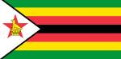

About Me
My name is Munyaradzi and I go by Munya. I was born in Zimbabwe and live with my family in Zimbabwe. I am currently working as an administrative legal assistant at a law firm. My children are my world and I love spending time with them. I love to travel and I love to learn new things.

Harare, Zimbabwe
Zimbabwe is a landlocked country located in Southern Africa. It is known for its diverse wildlife, beautiful landscapes, and the famous Victoria Falls. Zimbabwe is rich in culture and history, with a vibrant arts scene and numerous heritage sites.
